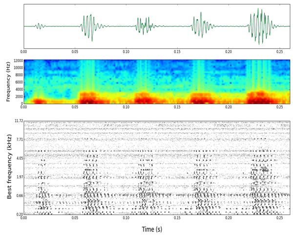

The Neural Reckoning Group is led by Dan Goodman. It is part of the Intelligent Systems and Networks group in the Department of Electrical and Electronic Engineering at Imperial College London. Follow us on Twitter @neuralreckoning.
{kind=link}
The brain processes information using highly connected parallel networks of neurons communicating via precisely timed, discrete neural impulses (called "spikes"). This spike-based form of computation is specific to the brain, being radically different to conventional digital and analogue computation. The aim of our research is to uncover the principles underlying spike-based neuronal computation, both as a fundamental research problem and with an eye to applications in intelligent systems and neural prosthetics (as we know that brains massively outperform state of the art algorithms).
Specifically, we work in two main domains: neuroinformatics and sensory neuroscience.
- Neuroinformatics is the application of computational methods in neuroscience, and we are particularly interested in the simulation of spiking neural networks and the analysis of experimentally recorded spiking data (see Software).
- In the domain of sensory neuroscience, we have worked primarily in the auditory system as the significance of spike-timing is so clearly established there. We use complex stimuli (such as natural sounds) to better understand the functioning of sensory systems in realistic environments.
Recent publications
-
Hathway P, Goodman DFM
(2018)
[Re] Spike Timing Dependent Plasticity Finds the Start of Repeating Patterns in Continuous Spike Trains.
ReScience doi:10.5281/zenodo.1327348 -
Dietz M, Lestang J-H, Majdak P, Stern RM, Marquardt T, Ewert SD, Hartmann WH, Goodman DFM
(2018)
A framework for testing and comparing binaural models.
Hearing Research doi: 10.1016/j.heares.2017.11.010 -
Steadman MA, Kim C, Lestang JH, Goodman DFM, Picinali L
Effects of gamification and active listening on short-term sound localization training in virtual reality.
-
Zheng JX, Pawar S, Goodman DFM
Graph Drawing by Stochastic Gradient Descent.
-
Stimberg M, Goodman DFM, Brette R, De Pittà M
Modeling neuron-glia interactions with the Brian 2 simulator.
Selected publications
-
Goodman DFM, Winter IM, Léger AC, de Cheveigné A, Lorenzi C
(2018)
Modelling firing regularity in the ventral cochlear nucleus: mechanisms, and effects of stimulus level and synaptopathy.
Hearing Research doi: 10.1016/j.heares.2017.09.010 -
Rossant C, Kadir SN, Goodman DFM, et al.
(2016)
Spike sorting for large, dense electrode arrays.
Nature Neuroscience doi: 10.1038/nn.4268 -
Goodman DFM, Benichoux V, Brette R
(2013)
Decoding neural responses to temporal cues for sound localization.
eLife 2013;2:e01312 -
Fontaine B, Goodman DFM, Benichoux V, Brette R
(2011)
Brian Hears: online auditory processing using vectorisation over channels.
Frontiers in Neuroinformatics 5:9. doi: 10.3389/fninf.2011.00009 -
Rossant C, Goodman DFM, Fontaine B, Platkiewicz J, Magnusson AK, Brette R
(2011)
Fitting neuron models to spike trains.
Frontiers in Neuroscience 5:9. doi: 10.3389/fnins.2011.00009 -
Goodman DFM, Brette R
(2010)
Spike-timing-based computation in sound localization.
PLoS Computational Biology 6(11): e1000993. doi:10.1371/journal.pcbi.1000993 -
Goodman DFM, Brette R
(2009)
The Brian simulator.
Frontiers in Neuroscience 3(2), doi:10.3389/neuro.01.026.2009